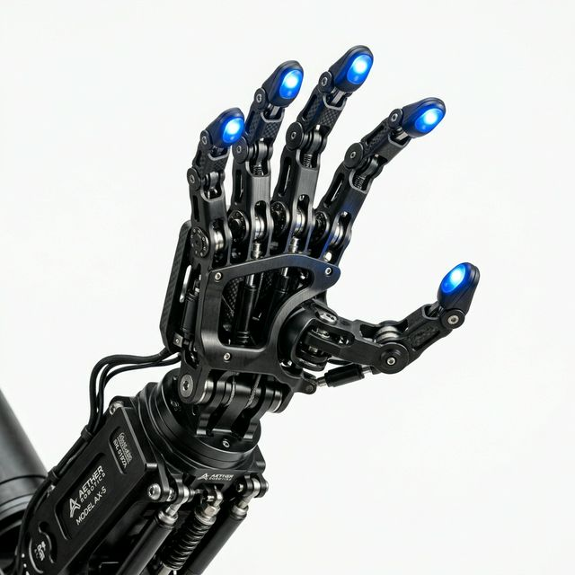
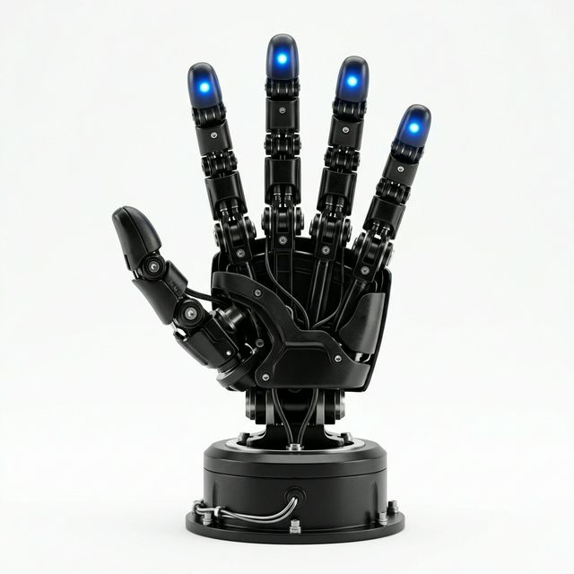

Gravity is just a suggestion.
물리적 한계를 벗어난 궁격의 움직임. 당신의 상상력을 현실로 이끌어낼 단 하나의 물리적 지능을 만나보세요.
Zero-G Precision. 무중력에 가까운 부드러움.
1/1000초 단위로 반응하는 관절형 링크 메커니즘. 아무리 무거운 작업도, 아무리 미세한 조작도 마치 무중력 공간에서 이루어지듯 매끄럽고 완벽하게 통제됩니다.
Sentient Touch. 스스로 인지하는 손끝.
차가운 금속에 생명을 불어넣는 푸른빛. 고정밀 촉각 센서와 근접 센서가 결합된 지능형 노드(Node)는 대상을 닿기도 전에 이해합니다.
Limitless Integration. 한계 없는 확장.
표준화된 원형 마운트와 중앙 집중형 와이어링. 어떤 시스템, 어떤 코딩 환경과도 완벽하게 동기화됩니다. 연결되는 순간, 당신의 프로젝트는 진화할 것입니다.

ROI Analysis
협동로봇 도입을 통한 생산성 향상 및 비용 절감 시뮬레이션
Advanced Dexterity
Physical AI의 정수, 알레그로 핸드 시리즈
Allegro Hand V4
- DOF: 16 Independent Joints
- Payload: 5.0 kg
- Weight: 1.08 kg
- Comms: High-speed CAN Bus
Advancing embodied AI through touch perception and human-robot interaction.
View more →Touch Perception
- Sensors: Digit / ReSkin / Digit 360
- Collab: Meta FAIR Open Source
- Logic: Torque Controlled
- Power: 24V DC / 100W Peak
Efficient data collection with high-fidelity tactile feedback for AI research.
View more →[Co-Bot Solution] Advanced Dexterous End-Effector
인간과의 안전한 공존, 그리고 한계 없는 유연성